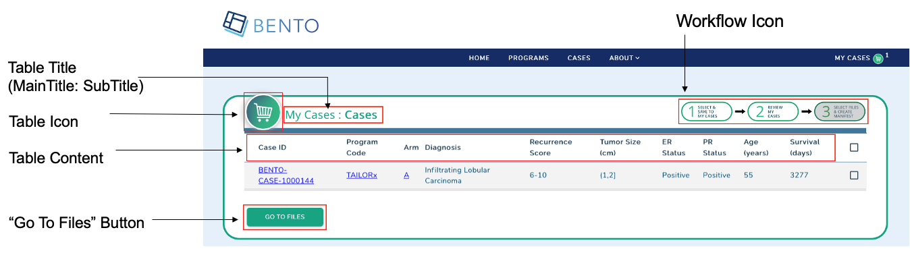
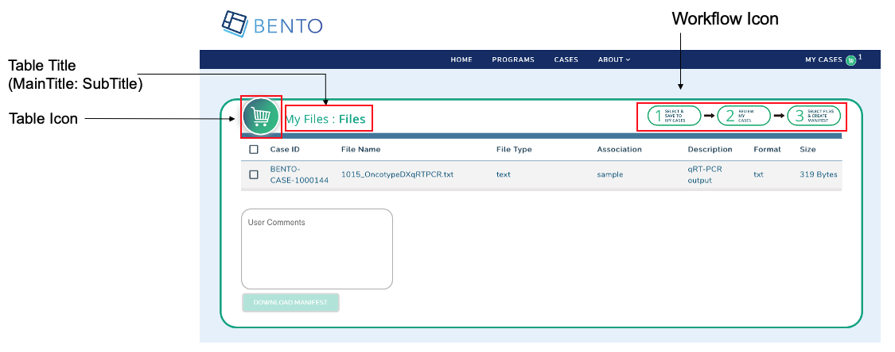
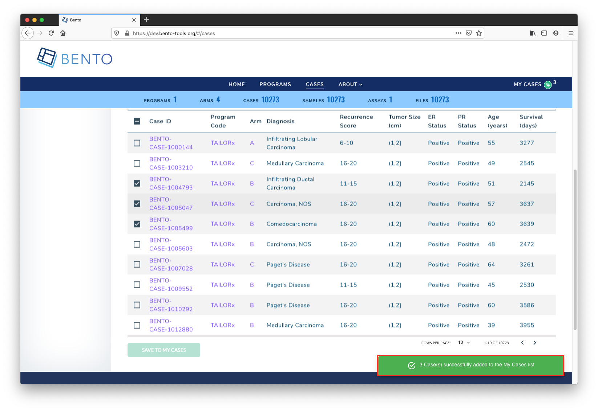

8. Cart Workflow¶
8.1. Introduction¶
The cart workflow is a mechanism for users to generate a manifest for working with case files.
8.2. Prerequisites¶
Fork the GitHub repo
https://github.com/CBIIT/bento-frontend(representing your GitHub username asYOUR-USERNAME)Create a local clone of your fork into a local directory, represented here as
$(src).
8.3. Configuring the Cases page in the Cart Workflow¶

8.3.1. Cases Page: Table Title¶
To configure the table title on the page (right above the table)
8.3.1.1. Edit configuration file¶
Edit
$(src)/bento-frontend/src/bento/cartWorkflowData.jswith the editor of your choiceUnder
myCasesPageData,set the field
myCasesMainTitleto have the desired title for the pageset the field
myCasesSubTitleto have the desired subtitle
For example, to have the page appear as ‘My Subjects: Subjects’ instead of ‘My Cases: Cases’ (with ‘My Cases’ being the title):
export const myCasesPageData = {
myCasesMainTitle: 'My Subjects :',
myCasesSubTitle: 'Subjects',
8.3.2. Cases Page: Table Content¶
To configure the table on the “My Cases” page
8.3.2.1. Edit configuration file¶
Edit
$(src)/bento-frontend/src/bento/cartWorkflowData.jswith the editor of your choiceUnder
GET_MY_CASES_DATA_QUERY, set graphql query …
8.3.3. Cases Page: Table Icon¶
To configure the Table Icon for the “My Cases” page
8.3.4. Cases Page: Add Icon¶
add icon file to appropriate file location:
$(src)/bento-frontend/src/assets/icons/add and commit file to repo; then push the commit to github
8.3.4.1. Edit configuration file¶
Edit
$(src)/bento-frontend/src/bento/cartWorkflowData.jswith the editor of your choiceUnder
myCasesPageData,set the field
headerIconSrcto point to the new desired image fileUpdate the field
headerIconAltto an appropriate “alternate text” description for the icon
For example:
export const myCasesPageData = {
...
headerIconSrc: 'https://raw.githubusercontent.com/YOUR-USERNAME/bento-frontend/master/src/assets/icons/NewIcon.svg',
headerIconAlt: 'NewIcon logo',
8.3.5. Cases Page: “Go To Files” Button¶
To configure the Configure “Go To Files” Button* for the “Shopping Cart/My Cases” workflow
8.3.5.1. Edit configuration file¶
Edit
$(src)/bento-frontend/src/bento/cartWorkflowData.jswith the editor of your choiceUnder
myCasesPageData, set the fieldbuttonTextto have the desired text valueFor example, to have the link appear as ‘Go To Files Page’ instead of ‘GO TO FILES’:
export const myCasesPageData = {
...
buttonText: 'Go To Files Page',
8.3.6. Cases Page: Workflow Icon¶
To configure the Workflow Icon for the “Shopping Cart/My Cases” workflow
8.3.6.1. Add Icon file to repo¶
add icon file to appropriate file location:
$(src)/bento-frontend/src/assets/icons/add and commit file to repo; then push the commit to github
8.3.6.2. Edit configuration file¶
Edit
$(src)/bento-frontend/src/bento/cartWorkflowData.jswith the editor of your choiceUnder
myCasesPageData, set the fieldcartLabelto have the desired text valueSet the field
wizardIconSrcto point to the new desired image fileUpdate the field
wizardIconAltto an appropriate “alternate text” description for the icon;
For example, to have the icon to use the file
MyWizardIcon.svginstead of fileMyCases-Wizard-Step2.svg
export const myCasesPageData = {
...
wizardIconSrc: 'https://raw.githubusercontent.com/YOUR-USERNAME/bento-frontend/master/src/assets/icons/MyWizardIcon.svg',
wizardIconAlt: 'Go To Step 2',
};
8.4. Configuring Files Page in Cart Workflow¶

8.4.1. Files Page: Table Title¶
To configure the table title on the page (right above the table)
8.4.1.1. Edit configuration file¶
Edit
$(src)/bento-frontend/src/bento/cartWorkflowData.jswith the editor of your choiceUnder
myFilesPageData,set the field
myFilesMainTitleto have the desired title for the pageset the field
myFilesSubTitleto have the desired subtitle
For example, to have the page appear as ‘My Subjects: Files’ instead of ‘My Files: Files’:
export const myFilesPageData = {
myFilesMainTitle: 'My Subjects :',
myFilesSubTitle: 'Files',
8.4.2. Files Page: Table Icon¶
To configure the Table Icon for the “My Files” page
8.4.2.1. Add Icon file to repo¶
add icon file to appropriate file location:
$(src)/bento-frontend/src/assets/icons/add and commit file to repo; then push the commit to github
8.4.2.2. Edit configuration file¶
Edit
$(src)/bento-frontend/src/bento/cartWorkflowData.jswith the editor of your choiceUnder
myFilesPageData,set the field
headerIconSrcto point to the new desired image fileUpdate the field
headerIconAltto an appropriate “alternate text” description for the icon
For example:
export const myFilesPageData = {
...
headerIconSrc: 'https://raw.githubusercontent.com/YOUR_USERNAME/bento-frontend/master/src/assets/icons/NewIcon.svg',
headerIconAlt: 'NewIcon logo',
8.4.3. Files Page: Workflow Icon¶
To configure the Workflow Icon for the Files Page in the “Shopping Cart/My Cases” workflow
8.4.3.1. Add an Icon¶
add icon file to appropriate file location:
$(src)/bento-frontend/src/assets/icons/add and commit file to repo; then push the commit to github
8.4.3.2. Edit configuration file¶
Edit
$(src)/bento-frontend/src/bento/cartWorkflowData.jswith the editor of your choiceUnder
myFilesPageData, set the fieldcartLabelto have the desired text valueSet the field
wizardIconSrcto point to the new desired image fileUpdate the field
wizardIconAltto an appropriate “alternate text” description for the icon; it is recommended to use underscores instead of spaces with this field
For example, to have the icon to use the file
MyWizardIcon.svginstead of fileMyCases-Wizard-Step2.svg
export const myFilesPageData = {
...
wizardIconSrc: 'https://raw.githubusercontent.com/YOUR_USERNAME/bento-frontend/master/src/assets/icons/MyWizardIcon.svg',
wizardIconAlt: 'Go To Step 2',
};
8.4.4. Files Page: File Manifest Name¶
To configure the File Manifest Name for “Shopping Cart/My Cases” workflow
8.4.4.1. Edit configuration file¶
Edit
$(src)/bento-frontend/src/bento/cartWorkflowData.jswith the editor of your choiceUnder
myFilesPageData, set the fieldmanifestFileName: to have the desired file valueFor example, to use the name “File Manifest” instead of
BENTO File Manifest
export const myFilesPageData = {
...
manifestFileName: 'File Manifest',
...
};
8.6. Configuring Notifications for Cart Workflow¶

8.6.1. Notification text/messages when adding cases to Cart¶
8.6.1.1. Edit configuration file¶
Edit
$(src)/bento-frontend/src/bento/cartWorkflowData.jswith the editor of your choiceUnder
cartSelectionMessages, set the fieldselectionsAddedMessageto have the desired messageFor example,
export const cartSelectionMessages = {
selectionsAddedMessage: 'DONE: successfully added to the list',
...
};
8.6.2. Notification text/messages when removing cases from Cart¶
8.6.2.1. Edit configuration file¶
Edit
$(src)/bento-frontend/src/bento/cartWorkflowData.jswith the editor of your choiceUnder
cartSelectionMessages, set the fieldselectionsRemovedMessageto have the desired messageFor example,
export const cartSelectionMessages = {
...
selectionsRemovedMessage: 'DONE: successfully removed from the list',
};